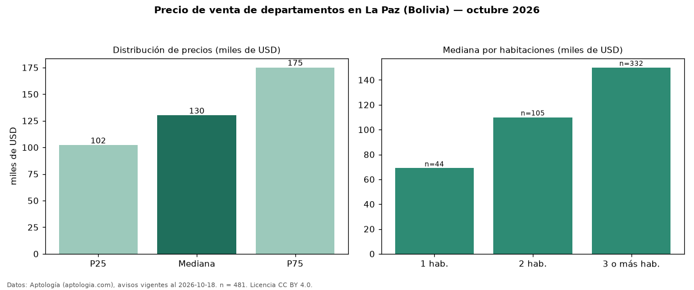

Precio de venta de departamentos en La Paz (Bolivia) — octubre 2026
Con 481 avisos vigentes, el precio mediano de departamentos en venta en La Paz (Bolivia) es USD 130.000. Por metro cuadrado, la mediana es USD 1.099/m² (n = 462 avisos con área). Por precio mediano es la ciudad 1 de 3 de Bolivia con al menos 30 avisos de departamentos en venta (USD). Tiene 5 zonas con al menos 30 avisos de departamentos en venta; la más cara es Calacoto (USD 208.500) y la más económica Irpavi (USD 110.500). La mediana de toda la vivienda en venta de La Paz (USD) es USD 168.000; los departamentos quedan −23 %. El área mediana anunciada es 131 m². El segmento con más oferta es el de 3 o más habitaciones (332 avisos, mediana USD 150.000); pasar de 1 habitación a 3 o más habitaciones cambia la mediana +117 %. La cuota de mantenimiento o condominio mediana declarada es USD 50,00 al mes (n = 299). Datos: Aptología (aptologia.com), CC BY 4.0 — https://www.aptologia.com/bo/venta/la-paz. Archivos: PDF, CSV con las cifras y gráfica PNG.

| Avisos únicos | 481 |
|---|---|
| Percentil 25 | COP 102.000 |
| Mediana | COP 130.000 |
| Percentil 75 | COP 175.000 |
| Mediana por m² | COP 1.098 |
Fuente: avisos vigentes de portales inmobiliarios recopilados por Aptología, deduplicados (mínimo 30 avisos únicos por celda). Precios pedidos, no cerrados. Fecha: 2026-10-18.